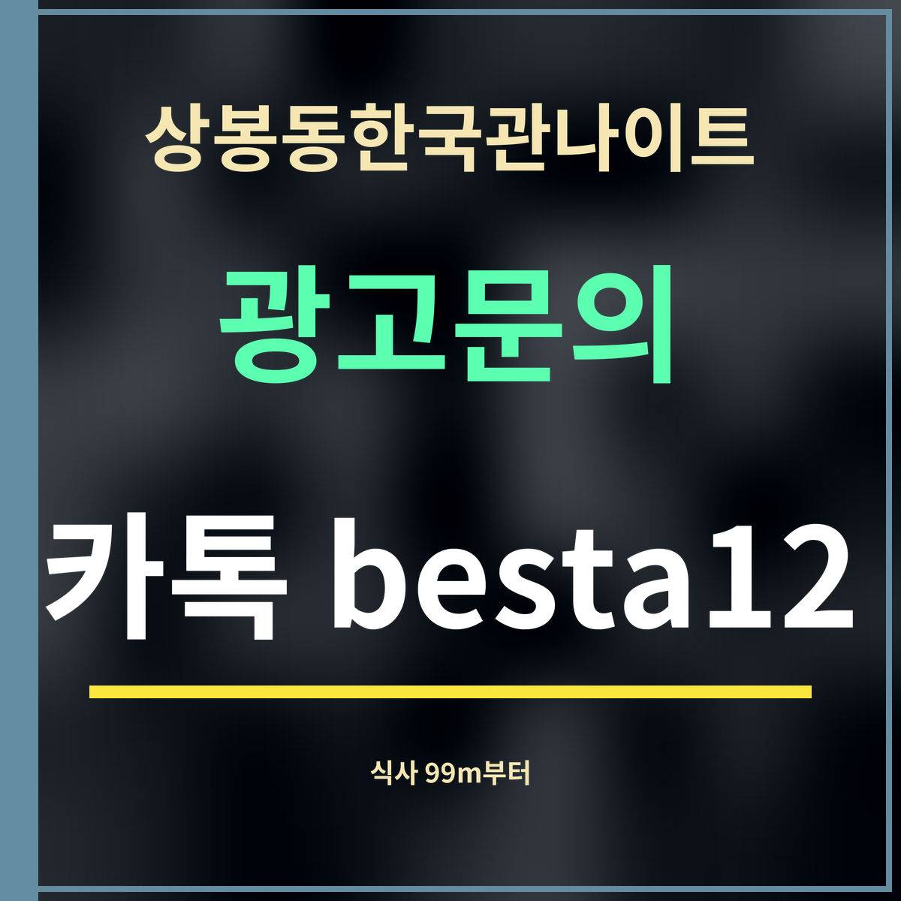

19세 미만 출입 금지
상봉동한국관나이트 가기 전 저녁, 99m부터 식당 안내
제휴 없는 정보 안내 · 식당 위치는 카카오맵 검색 「상봉역 한식」(2026년 9월 27일), 거리는 직선거리입니다. 맛·가격 평가는 하지 않았습니다.

핵심 3줄: 상봉동한국관나이트에서 가장 가까운 식당은 직선 99m. 200m 안에 세 곳, 400m 안에 여덟 곳이 있습니다. 빈속보다 저녁을 먹고 가는 편이 몸에 편합니다.
거리순 식사할 곳
| 이름 | 종류 | 주소 | 거리 |
|---|---|---|---|
| 돼봉삼겹살 | 삼겹살 | 중랑구 망우로50길 24 | 99m |
| 함평국밥 | 국밥 | 중랑구 봉우재로33길 73 | 156m |
| 상봉주전 | 한식 | 중랑구 면목로92길 28 | 199m |
| 홍길동회수산 | 회 | 중랑구 봉우재로33길 47 | 246m |
| 까망통돼지 | 삼겹살 | 중랑구 면목로 488 | 280m |
| 이주소곱창 | 곱창,막창 | 중랑구 봉우재로33길 34 | 323m |
| 종로닭한마리 | 닭요리 | 중랑구 면목로88길 5-9 | 334m |
| 먹거리집 | 순대 | 중랑구 면목로91길 8 | 380m |
왜 먹고 가는 게 좋을까
빈속에 술을 마시면 금방 취하고 다음 날도 힘들기 쉽습니다. 저녁을 든든히 먹고 가면 오래 즐기기에도 좋습니다. 가게가 저녁 6시에 문을 여니, 6~7시 사이에 근처에서 식사를 마치고 들어가면 시간이 맞습니다.
표의 식당은 카카오맵 분류 그대로 옮긴 것이라, 영업시간과 휴무일은 가기 전에 확인하세요.
식당 다음 순서
저녁을 먹은 식당에서 상봉동한국관나이트까지는 가장 가까운 곳이 100m 남짓이라 걸어서 금방입니다. 저녁 자리에서 한잔했다면 차는 그 자리에 두고 움직이세요. 법제처 생활법령정보(2026년 8월 15일 기준)는 혈중알코올농도 0.03% 이상을 운전 금지 기준으로 정하고 있습니다. 식사 뒤 입구를 찾을 때는 입구와 주차장 위치를 참고하세요.
자주 묻는 것
가장 가까운 식당은 어디인가요?
직선 99m 거리에 있습니다(카카오맵 검색 기준).
직선 99m 거리에 있습니다(카카오맵 검색 기준).
몇 시에 먹으면 좋나요?
가게가 저녁 6시에 문을 열어, 6~7시 사이에 식사를 마치고 들어가면 시간이 맞습니다.
가게가 저녁 6시에 문을 열어, 6~7시 사이에 식사를 마치고 들어가면 시간이 맞습니다.
맛은 어떤가요?
이 쪽은 위치와 종류만 옮겼고, 맛·가격 평가는 하지 않았습니다.
이 쪽은 위치와 종류만 옮겼고, 맛·가격 평가는 하지 않았습니다.
한 줄 정리: 상봉동한국관나이트 가기 전 저녁은 99m부터 — 먹고 들어가면 오래 즐기기 좋습니다.
초저녁 흐름은 18~20시 요일별 비교를 보세요.